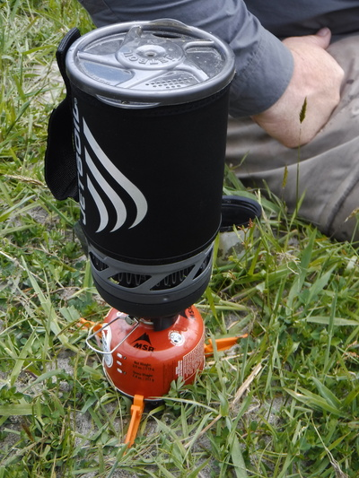
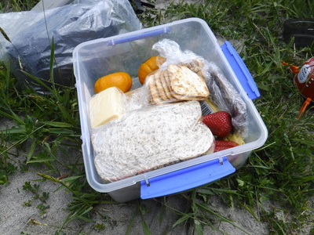
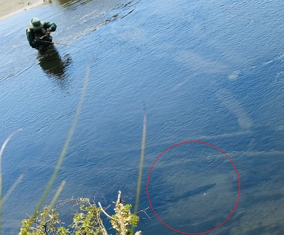
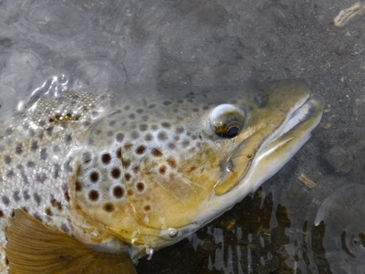
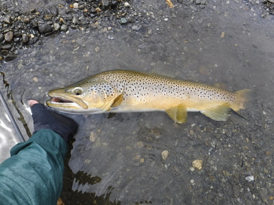
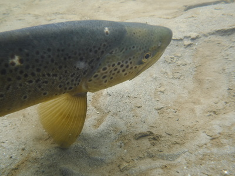

釣行日誌 ＮＺ編 「一期一会の旅：A Sentimental Journey」
両岸に分かれて
11-23(FRI)-3
時計が昼を回ったので、ランチタイムとする。ディーンが小型ストーブとガスカートリッジを組み立てて、川の水を汲んで念入りに煮沸してからコーヒーを淹れてくれた。


クラッカーのチーズ載せ、オレンジ、イチゴ、チョコバーなどを腹一杯詰め込み、シアワセな午後を迎えた。
昼食後の釣りは、ディーンが僕にフライボックスを預けてから１人で対岸に渡り、高い岸辺の崖から、流れに立ち込んでいる僕に指示を出してくれた。少し遡行するとすぐに彼のすぐ足下に定位しているブラウンを見つけ、フライの選択を大声で指示してくれる。

僕は腰の深さまで流れに立ち込んで、フライを交換しようとするのだが、彼のフライボックスは丸っこくて滑りやすく、流れに落とし流されてしまいそうでとても緊張し、不安になった。中にはお父さんのブリントさんが巻きためた必殺フライの数々がびっしり収納されているのだ。それでも何とか老眼をカバーする眼鏡型ルーペの助けを借りて、小ぶりなビーズヘッドニンフの１本を選び、丁寧に結んでから狙いを定めた。神経質なブラウンを驚かさないよう、細心の注意を払いつつ投射した。
しかし、最初の１投目の着水位置が悪く、いきなりスプーキーな鱒は姿を消したとのこと。ガックリ....。
２時近くになり、また別の１尾をディーンが見つけた。彼の眼力は本当に驚くべきものがある。これは偏光グラスの品質などの問題では無く、どこに鱒が居着いているかを熟知した経験がものを言うのだと思う。川の全ての水域をしらみつぶしに見て捜しても効率が悪く時間がいくらあっても足りないだろう。この川に案内してもらって、さぁ１人で釣ってみろと放り出されたら、僕ではおそらく１尾も見つけられず釣り上げられないだろう。
それはさておき、眼前の１尾である。今度はしっかりディーンに訊ねて鱒の位置を正確に把握してから同じ小型ニンフをプレゼンテーションした。沈んだニンフが鱒の居るあたりを通り過ぎ、下流側の沈木に引っかかりそうだったので右手でラインを手繰り寄せニンフを引き寄せてかわそうとしたその瞬間、崖の上から
「行く行くっ！追ったぞっ！」
大声が飛んできた。あっと思って右手を止めると
「ストラーイクッ！！」
との声。
『えっ！？ 喰ったの？』
慌てて合わせるとズシンと重みが乗った。ブラウンが掛かったのだ。倒木に逃げ込むのだけは勘弁してよ！ と祈りつつ２Xの太いティペットを頼りに、やや強引にブラウンを川の中央に引きずり出す。昨日教わったとおりにロッドを下流側に倒し、サイドプレッシャーを強く掛けつつ浅瀬まで寄せる。さて困った。ネットを持っているディーンは対岸の崖の上、この鱒はハンドランディングするしかない。あと少しで、足下を右往左往している鱒の太い尻尾の付け根に手が届きそうなのだが、そこからさらに鱒は深みへと逃げてしまう。できればあまり弱らせてしまう前に取り込みたかったが、ネット無しではそうも言ってはいられない。ようやく弱って浅瀬で大人しくなったブラウンの尾びれの付け根を、ロッドを持ち替えた左手でギュッと掴む。

ソリッドな鱒の尾っぽを左手で保持しているので、ベストの左ポケットのフォーセップが取り出せない。仕方なく右手でニンフを外そうと鱒の口に指を突っ込むと、上下の顎に生えている鋭い歯、というより牙！で指先がザクザクに傷つく。やっとのことでフライを外し、鱒を横たえる。だいぶ弱っているようだ。

流れのある深いところで魚体を保持し、ゆっくり時間を取って回復を待つ。背中の張り出した頭の大きな１尾である。少し痩せているのはまだ産卵期からコンディションが戻ってないためだろうか？
やっと力を取り戻したブラウンは、物憂げに深みへと泳ぎ去った。

釣行日誌ＮＺ編 目次へ
サイトマップ
ホームへ
お問い合わせ